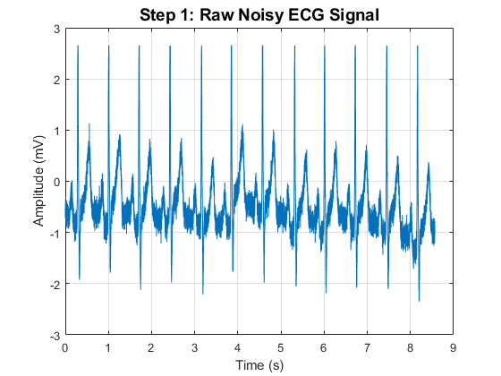
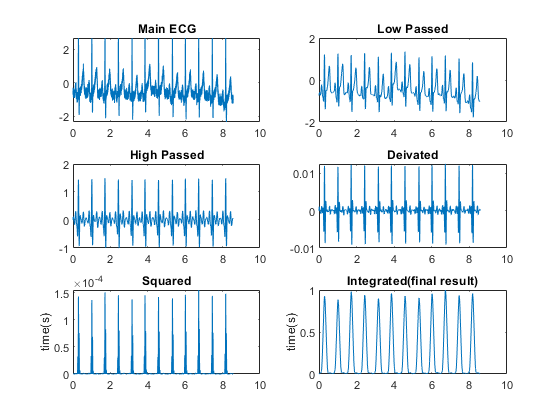
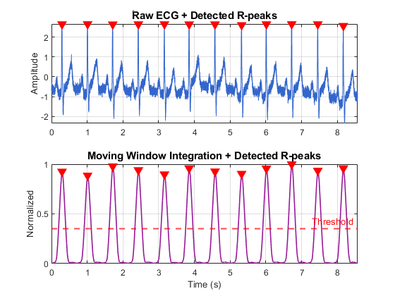
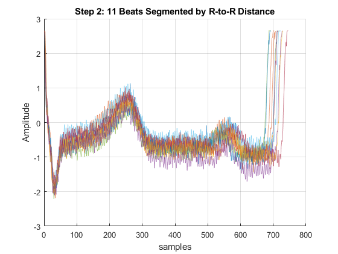
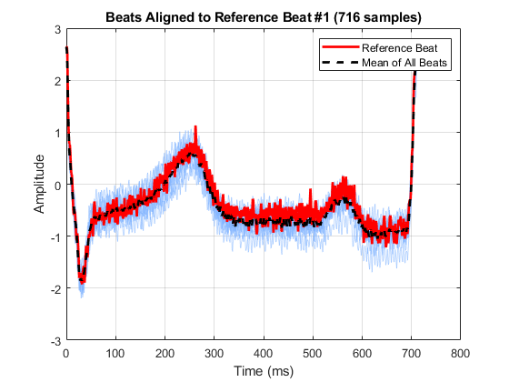
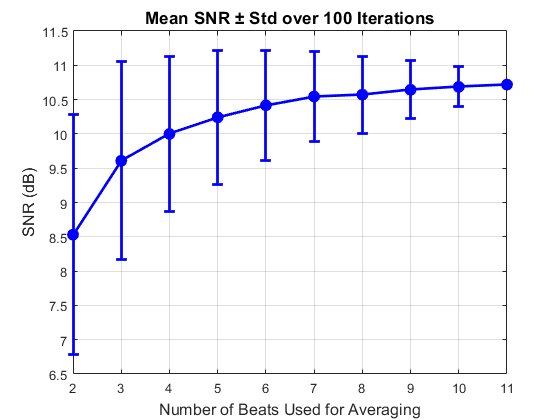
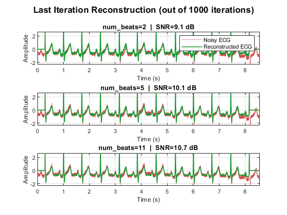
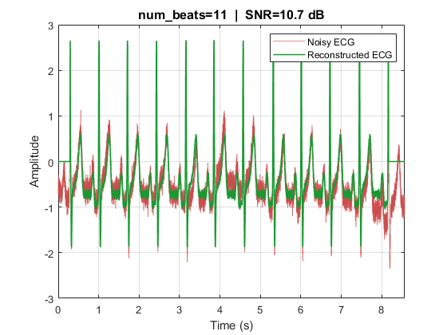

Contents
- ECG Noise Reduction using Synchronous Averaging
- ===== STEP 0: Load ECG Data =====
- ===== STEP 1: Visualize Raw Noisy Signal =====
- ===== STEP 2.2: R-Peak Detection (Pan-Tompkins based on Dr. Moradi's slides and Rangayyan Book) =====
- ===== STEP 2: Beat Segmentation (R-to-R based) =====
- ===== STEP 3B: Align beats to median-length beat =====
- ===== STEP 4 & 5: Loop over num_beats = 2 to 11 =====
- ===== Plot: noisy vs reconstructed signals ======
- my pan tompkins function based on Rangayyan Book
ECG Noise Reduction using Synchronous Averaging
clear; close all; clc;
===== STEP 0: Load ECG Data =====
ecg_raw = load('ecg.dat'); fs = 1000; % Sampling frequency (Hz) N = length(ecg_raw); t = (0:N-1) / fs; % Time vector (seconds)
===== STEP 1: Visualize Raw Noisy Signal =====
figure('Name','Step 1: Raw Noisy ECG'); plot(t, ecg_raw); xlabel('Time (s)'); ylabel('Amplitude (mV)'); title('Step 1: Raw Noisy ECG Signal', 'FontSize', 14, 'FontWeight', 'bold'); grid on; % %% ===== STEP 2: R-Peak Detection (Pan-Tompkins based on built in Matlab functions ) ===== % % % Bandpass filter: 5-15 Hz to enhance QRS % [b_bp, a_bp] = butter(3, [5 15]/(fs/2), 'bandpass'); % ecg_filtered = filtfilt(b_bp, a_bp, ecg_raw); % % % Derivative % ecg_diff = diff(ecg_filtered); % ecg_diff = [ecg_diff(1); ecg_diff]; % % % Squaring % ecg_sq = ecg_diff .^ 2; % % % Moving window integration (150 ms window) % win_size = round(0.15 * fs); % ecg_mwi = movmean(ecg_sq, win_size); % % % Normalize % ecg_mwi = ecg_mwi / max(ecg_mwi); % % % Threshold for R-peak detection % threshold = 0.35; % min_rr_samples = round(0.4 * fs); % Minimum RR: 400ms (150 bpm max) {60 s/150 bpm} = 0.4s % % [~, R_locs] = findpeaks(ecg_mwi, 'MinPeakHeight', threshold, ... % 'MinPeakDistance', min_rr_samples); % % % Remove duplicate R-peaks % R_locs = unique(R_locs); % num_beats = length(R_locs); % clc % fprintf('Number of detected R-peaks: %d\n', num_beats); % fprintf('Average Heart Rate: %.1f bpm\n', (num_beats / t(end)) * 60); % % % ---- Plot R-peak detection pipeline ---- % figure('Name','Step 2: R-Peak Detection'); % subplot(4,1,1); % plot(t, ecg_raw, 'Color',[0.2 0.4 0.8]); % title('ًRaw ECG + Detected R-peaks','FontSize',11,'FontWeight','bold'); % ylabel('Amplitude'); grid on; % hold on; % plot(t(R_locs), ecg_raw(R_locs), 'rv', 'MarkerFaceColor','r','MarkerSize',8); % % subplot(4,1,2); % plot(t, ecg_filtered, 'Color',[0.1 0.6 0.3]); % title('Bandpass Filtered (5-15 Hz)','FontSize',11,'FontWeight','bold'); ylabel('Amplitude'); grid on; % % subplot(4,1,3); % plot(t, ecg_sq, 'Color',[0.8 0.4 0.1]); % title('Squared Derivative (Energy)','FontSize',11,'FontWeight','bold'); ylabel('Energy'); grid on; % % subplot(4,1,4); % plot(t, ecg_mwi, 'Color',[0.6 0.1 0.6],'LineWidth',1.2); hold on; % yline(threshold, 'r--', 'LineWidth',1.5, 'Label','Threshold'); % plot(t(R_locs), ecg_mwi(R_locs), 'rv', 'MarkerFaceColor','r','MarkerSize',8); % title('Moving Window Integration + Detected R-peaks','FontSize',11,'FontWeight','bold'); % ylabel('Normalized'); xlabel('Time (s)'); grid on; % for k = 1:4; subplot(4,1,k); xlim([t(1) t(end)]); end

===== STEP 2.2: R-Peak Detection (Pan-Tompkins based on Dr. Moradi's slides and Rangayyan Book) =====
clc out_pan_tomp = pan_tomp(ecg_raw, fs, 1); % Threshold for R-peak detection threshold = 0.35; min_rr_samples = round(0.4 * fs); % Minimum RR: 400ms (150 bpm max) {60 s/150 bpm} = 0.4s [~, R_locs] = findpeaks(out_pan_tomp, 'MinPeakHeight', threshold, ... 'MinPeakDistance', min_rr_samples); % Remove duplicate R-peaks R_locs = unique(R_locs); num_beats = length(R_locs); clc fprintf('Number of detected R-peaks: %d\n', num_beats); fprintf('Average Heart Rate: %.1f bpm\n', (num_beats / t(end)) * 60); % ---- Plot R-peak detection pipeline ---- figure('Name','Step 2: R-Peak Detection'); subplot(2,1,1); plot(t, ecg_raw, 'Color',[0.2 0.4 0.8]); title('ًRaw ECG + Detected R-peaks','FontSize',11,'FontWeight','bold'); ylabel('Amplitude'); grid on; hold on; plot(t(R_locs), ecg_raw(R_locs), 'rv', 'MarkerFaceColor','r','MarkerSize',8); subplot(2,1,2); plot(t, out_pan_tomp, 'Color',[0.6 0.1 0.6],'LineWidth',1.2); hold on; yline(threshold, 'r--', 'LineWidth',1.5, 'Label','Threshold'); plot(t(R_locs), out_pan_tomp(R_locs), 'rv', 'MarkerFaceColor','r','MarkerSize',8); title('Moving Window Integration + Detected R-peaks','FontSize',11,'FontWeight','bold'); ylabel('Normalized'); xlabel('Time (s)'); grid on; for k = 1:2; subplot(2,1,k); xlim([t(1) t(end)]); end


===== STEP 2: Beat Segmentation (R-to-R based) =====
clc % RR intervals (in samples) RR_intervals = diff(R_locs); % length = num_beats - 1. this is the R-R lengths % Each beat: from current R-peak to next R-peak % So we get num_beats-1 beats (last beat has no "next R") num_valid = length(R_locs) - 1; R_locs_valid = R_locs(1:num_valid); fprintf('Valid beats: %d\n', num_valid); fprintf('RR intervals (samples): min=%d, max=%d, mean=%.1f\n', ... min(RR_intervals), max(RR_intervals), mean(RR_intervals)); % Store beats as cell array (different lengths) beats_cell = cell(1, num_valid); for i = 1:num_valid win = R_locs(i) : R_locs(i+1) - 1; % R_k to R_{k+1} (exclusive) beats_cell{i} = ecg_raw(win); end % ── Plot all beats overlaid figure('Name', 'Step 3: Beat Segmentation (R-to-R)'); hold on; colors = lines(num_valid); for i = 1:num_valid beat = beats_cell{i}; plot( beat, 'Color', [colors(i,:) 0.5]); end xlabel('samples'); ylabel('Amplitude'); title(sprintf('Step 2: %d Beats Segmented by R-to-R Distance', num_valid)); grid on; % ── Print beat lengths ──────────────────────────────────────────────────── fprintf('\nBeat lengths (samples):\n'); for i = 1:num_valid fprintf(' Beat %2d: %d samples (%.1f ms)\n', i, length(beats_cell{i}), length(beats_cell{i})/fs*1000); end
Valid beats: 11 RR intervals (samples): min=692, max=745, mean=715.7 Beat lengths (samples): Beat 1: 716 samples (716.0 ms) Beat 2: 703 samples (703.0 ms) Beat 3: 718 samples (718.0 ms) Beat 4: 729 samples (729.0 ms) Beat 5: 692 samples (692.0 ms) Beat 6: 723 samples (723.0 ms) Beat 7: 745 samples (745.0 ms) Beat 8: 693 samples (693.0 ms) Beat 9: 709 samples (709.0 ms) Beat 10: 730 samples (730.0 ms) Beat 11: 715 samples (715.0 ms)

===== STEP 3B: Align beats to median-length beat =====
beat_lengths = cellfun(@length, beats_cell); [~, ref_idx] = min(abs(beat_lengths - median(beat_lengths))); ref_len = beat_lengths(ref_idx); fprintf('Reference beat: #%d | length: %d samples (%.1f ms)\n', ref_idx, ref_len, ref_len/fs*1000); ref_beat = beats_cell{ref_idx}; ref_amp = max(abs(ref_beat)); beats_aligned = zeros(ref_len, num_valid); scale_len = zeros(1, num_valid); scale_amp = zeros(1, num_valid); for i = 1:num_valid original_beat = beats_cell{i}; scale_len(i) = length(original_beat) / ref_len; beat_resampled = interp1(linspace(0,1,length(original_beat)), original_beat, linspace(0,1,ref_len), 'spline'); curr_amp = max(abs(beat_resampled)); scale_amp(i) = curr_amp / ref_amp; beats_aligned(:,i) = beat_resampled / scale_amp(i); end fprintf('\nScale factors (length | amplitude):\n'); for i = 1:num_valid fprintf(' Beat %2d: len_scale=%.4f | amp_scale=%.4f\n', i, scale_len(i), scale_amp(i)); end t_ref = (0:ref_len-1) / fs * 1000; figure('Name', 'Step 3B: Aligned Beats'); hold on; for i = 1:num_valid if i == ref_idx continue end plot(t_ref, beats_aligned(:,i), 'Color',[0.5 0.7 1 0.5], 'LineWidth', 0.6, 'HandleVisibility','off'); end h_ref = plot(t_ref, beats_aligned(:,ref_idx), 'r-', 'LineWidth', 2); h_mean = plot(t_ref, mean(beats_aligned, 2), 'k--', 'LineWidth', 2); xlabel('Time (ms)'); ylabel('Amplitude'); title(sprintf('Beats Aligned to Reference Beat #%d (%d samples)', ref_idx, ref_len)); legend([h_ref, h_mean], {'Reference Beat', 'Mean of All Beats'}, 'Location', 'northeast'); grid on; box on;
Reference beat: #1 | length: 716 samples (716.0 ms) Scale factors (length | amplitude): Beat 1: len_scale=1.0000 | amp_scale=1.0000 Beat 2: len_scale=0.9818 | amp_scale=1.0020 Beat 3: len_scale=1.0028 | amp_scale=0.9992 Beat 4: len_scale=1.0182 | amp_scale=0.9997 Beat 5: len_scale=0.9665 | amp_scale=1.0060 Beat 6: len_scale=1.0098 | amp_scale=1.0015 Beat 7: len_scale=1.0405 | amp_scale=1.0004 Beat 8: len_scale=0.9679 | amp_scale=0.9999 Beat 9: len_scale=0.9902 | amp_scale=0.9988 Beat 10: len_scale=1.0196 | amp_scale=1.0008 Beat 11: len_scale=0.9986 | amp_scale=0.9997

===== STEP 4 & 5: Loop over num_beats = 2 to 11 =====
max_beats = min(11, num_valid); beat_range = 2:max_beats; num_iter = 1000; ref_len = beat_lengths(ref_idx); T_samp = 1/fs; y_bar = mean(beats_aligned, 2); sigma2_y = (1/(ref_len * T_samp)) * sum(y_bar .^ 2); SNR_dB_matrix = zeros(num_iter, length(beat_range)); % 100 x 10 ecg_all = zeros(N, length(beat_range)); % store last iteration for iter = 1:num_iter for b_idx = 1:length(beat_range) num_beats = beat_range(b_idx); % ── Template ────────────────────────────────────────────────────── chosen_global = randperm(num_valid, num_beats); template_aligned = mean(beats_aligned(:, chosen_global), 2); % ── SNR ─────────────────────────────────────────────────────────── sigma2_eta = 0; for k = 1:num_beats for n = 1:ref_len sigma2_eta = sigma2_eta + (beats_aligned(n, chosen_global(k)) - y_bar(n))^2; end end sigma2_eta = sigma2_eta / (ref_len * T_samp * (num_beats - 1)); SNR_dB_matrix(iter, b_idx) = 10 * log10(sigma2_y / sigma2_eta); % ── Reconstruct (only save last iteration) ──────────────────────── if iter == num_iter beats_recovered = cell(1, num_valid); for i = 1:num_valid beats_recovered{i} = interp1(linspace(0,1,ref_len), ... template_aligned * scale_amp(i), ... linspace(0,1,beat_lengths(i)), 'spline'); end ecg_reconstructed = zeros(N, 1); weight_map = zeros(N, 1); for i = 1:num_valid win = R_locs(i) : R_locs(i+1)-1; if length(win) == length(beats_recovered{i}) ecg_reconstructed(win) = ecg_reconstructed(win) + beats_recovered{i}'; weight_map(win) = weight_map(win) + 1; end end ecg_all(:, b_idx) = ecg_reconstructed; end end fprintf('Iteration %3d / %d done\n', iter, num_iter); end % ── Statistics ──────────────────────────────────────────────────────────── SNR_mean = mean(SNR_dB_matrix, 1); % [1 x 10] SNR_std = std(SNR_dB_matrix, 0, 1); fprintf('\n====== SNR Statistics (100 iterations) ======\n'); fprintf('%-12s %-12s %-10s\n', 'num_beats', 'Mean SNR', 'Std SNR'); fprintf('%s\n', repmat('-',1,36)); for b_idx = 1:length(beat_range) fprintf(' %-10d %-12.2f %.2f dB\n', beat_range(b_idx), SNR_mean(b_idx), SNR_std(b_idx)); end % ── SNR Plot with error bars ─────────────────────────────────────────────── figure('Name', 'SNR vs num_beats (100 iterations)'); errorbar(beat_range, SNR_mean, SNR_std, 'b-o', ... 'LineWidth', 2, 'MarkerFaceColor', 'b', 'MarkerSize', 7, ... 'CapSize', 8); xlabel('Number of Beats Used for Averaging', 'FontSize', 12); ylabel('SNR (dB)', 'FontSize', 12); title('Mean SNR ± Std over 100 Iterations', 'FontSize', 13, 'FontWeight', 'bold'); xticks(beat_range); grid on; box on;
Iteration 1 / 1000 done Iteration 2 / 1000 done Iteration 3 / 1000 done Iteration 4 / 1000 done Iteration 5 / 1000 done Iteration 6 / 1000 done Iteration 7 / 1000 done Iteration 8 / 1000 done Iteration 9 / 1000 done Iteration 10 / 1000 done Iteration 11 / 1000 done Iteration 12 / 1000 done Iteration 13 / 1000 done Iteration 14 / 1000 done Iteration 15 / 1000 done Iteration 16 / 1000 done Iteration 17 / 1000 done Iteration 18 / 1000 done Iteration 19 / 1000 done Iteration 20 / 1000 done Iteration 21 / 1000 done Iteration 22 / 1000 done Iteration 23 / 1000 done Iteration 24 / 1000 done Iteration 25 / 1000 done Iteration 26 / 1000 done Iteration 27 / 1000 done Iteration 28 / 1000 done Iteration 29 / 1000 done Iteration 30 / 1000 done Iteration 31 / 1000 done Iteration 32 / 1000 done Iteration 33 / 1000 done Iteration 34 / 1000 done Iteration 35 / 1000 done Iteration 36 / 1000 done Iteration 37 / 1000 done Iteration 38 / 1000 done Iteration 39 / 1000 done Iteration 40 / 1000 done Iteration 41 / 1000 done Iteration 42 / 1000 done Iteration 43 / 1000 done Iteration 44 / 1000 done Iteration 45 / 1000 done Iteration 46 / 1000 done Iteration 47 / 1000 done Iteration 48 / 1000 done Iteration 49 / 1000 done Iteration 50 / 1000 done Iteration 51 / 1000 done Iteration 52 / 1000 done Iteration 53 / 1000 done Iteration 54 / 1000 done Iteration 55 / 1000 done Iteration 56 / 1000 done Iteration 57 / 1000 done Iteration 58 / 1000 done Iteration 59 / 1000 done Iteration 60 / 1000 done Iteration 61 / 1000 done Iteration 62 / 1000 done Iteration 63 / 1000 done Iteration 64 / 1000 done Iteration 65 / 1000 done Iteration 66 / 1000 done Iteration 67 / 1000 done Iteration 68 / 1000 done Iteration 69 / 1000 done Iteration 70 / 1000 done Iteration 71 / 1000 done Iteration 72 / 1000 done Iteration 73 / 1000 done Iteration 74 / 1000 done Iteration 75 / 1000 done Iteration 76 / 1000 done Iteration 77 / 1000 done Iteration 78 / 1000 done Iteration 79 / 1000 done Iteration 80 / 1000 done Iteration 81 / 1000 done Iteration 82 / 1000 done Iteration 83 / 1000 done Iteration 84 / 1000 done Iteration 85 / 1000 done Iteration 86 / 1000 done Iteration 87 / 1000 done Iteration 88 / 1000 done Iteration 89 / 1000 done Iteration 90 / 1000 done Iteration 91 / 1000 done Iteration 92 / 1000 done Iteration 93 / 1000 done Iteration 94 / 1000 done Iteration 95 / 1000 done Iteration 96 / 1000 done Iteration 97 / 1000 done Iteration 98 / 1000 done Iteration 99 / 1000 done Iteration 100 / 1000 done Iteration 101 / 1000 done Iteration 102 / 1000 done Iteration 103 / 1000 done Iteration 104 / 1000 done Iteration 105 / 1000 done Iteration 106 / 1000 done Iteration 107 / 1000 done Iteration 108 / 1000 done Iteration 109 / 1000 done Iteration 110 / 1000 done Iteration 111 / 1000 done Iteration 112 / 1000 done Iteration 113 / 1000 done Iteration 114 / 1000 done Iteration 115 / 1000 done Iteration 116 / 1000 done Iteration 117 / 1000 done Iteration 118 / 1000 done Iteration 119 / 1000 done Iteration 120 / 1000 done Iteration 121 / 1000 done Iteration 122 / 1000 done Iteration 123 / 1000 done Iteration 124 / 1000 done Iteration 125 / 1000 done Iteration 126 / 1000 done Iteration 127 / 1000 done Iteration 128 / 1000 done Iteration 129 / 1000 done Iteration 130 / 1000 done Iteration 131 / 1000 done Iteration 132 / 1000 done Iteration 133 / 1000 done Iteration 134 / 1000 done Iteration 135 / 1000 done Iteration 136 / 1000 done Iteration 137 / 1000 done Iteration 138 / 1000 done Iteration 139 / 1000 done Iteration 140 / 1000 done Iteration 141 / 1000 done Iteration 142 / 1000 done Iteration 143 / 1000 done Iteration 144 / 1000 done Iteration 145 / 1000 done Iteration 146 / 1000 done Iteration 147 / 1000 done Iteration 148 / 1000 done Iteration 149 / 1000 done Iteration 150 / 1000 done Iteration 151 / 1000 done Iteration 152 / 1000 done Iteration 153 / 1000 done Iteration 154 / 1000 done Iteration 155 / 1000 done Iteration 156 / 1000 done Iteration 157 / 1000 done Iteration 158 / 1000 done Iteration 159 / 1000 done Iteration 160 / 1000 done Iteration 161 / 1000 done Iteration 162 / 1000 done Iteration 163 / 1000 done Iteration 164 / 1000 done Iteration 165 / 1000 done Iteration 166 / 1000 done Iteration 167 / 1000 done Iteration 168 / 1000 done Iteration 169 / 1000 done Iteration 170 / 1000 done Iteration 171 / 1000 done Iteration 172 / 1000 done Iteration 173 / 1000 done Iteration 174 / 1000 done Iteration 175 / 1000 done Iteration 176 / 1000 done Iteration 177 / 1000 done Iteration 178 / 1000 done Iteration 179 / 1000 done Iteration 180 / 1000 done Iteration 181 / 1000 done Iteration 182 / 1000 done Iteration 183 / 1000 done Iteration 184 / 1000 done Iteration 185 / 1000 done Iteration 186 / 1000 done Iteration 187 / 1000 done Iteration 188 / 1000 done Iteration 189 / 1000 done Iteration 190 / 1000 done Iteration 191 / 1000 done Iteration 192 / 1000 done Iteration 193 / 1000 done Iteration 194 / 1000 done Iteration 195 / 1000 done Iteration 196 / 1000 done Iteration 197 / 1000 done Iteration 198 / 1000 done Iteration 199 / 1000 done Iteration 200 / 1000 done Iteration 201 / 1000 done Iteration 202 / 1000 done Iteration 203 / 1000 done Iteration 204 / 1000 done Iteration 205 / 1000 done Iteration 206 / 1000 done Iteration 207 / 1000 done Iteration 208 / 1000 done Iteration 209 / 1000 done Iteration 210 / 1000 done Iteration 211 / 1000 done Iteration 212 / 1000 done Iteration 213 / 1000 done Iteration 214 / 1000 done Iteration 215 / 1000 done Iteration 216 / 1000 done Iteration 217 / 1000 done Iteration 218 / 1000 done Iteration 219 / 1000 done Iteration 220 / 1000 done Iteration 221 / 1000 done Iteration 222 / 1000 done Iteration 223 / 1000 done Iteration 224 / 1000 done Iteration 225 / 1000 done Iteration 226 / 1000 done Iteration 227 / 1000 done Iteration 228 / 1000 done Iteration 229 / 1000 done Iteration 230 / 1000 done Iteration 231 / 1000 done Iteration 232 / 1000 done Iteration 233 / 1000 done Iteration 234 / 1000 done Iteration 235 / 1000 done Iteration 236 / 1000 done Iteration 237 / 1000 done Iteration 238 / 1000 done Iteration 239 / 1000 done Iteration 240 / 1000 done Iteration 241 / 1000 done Iteration 242 / 1000 done Iteration 243 / 1000 done Iteration 244 / 1000 done Iteration 245 / 1000 done Iteration 246 / 1000 done Iteration 247 / 1000 done Iteration 248 / 1000 done Iteration 249 / 1000 done Iteration 250 / 1000 done Iteration 251 / 1000 done Iteration 252 / 1000 done Iteration 253 / 1000 done Iteration 254 / 1000 done Iteration 255 / 1000 done Iteration 256 / 1000 done Iteration 257 / 1000 done Iteration 258 / 1000 done Iteration 259 / 1000 done Iteration 260 / 1000 done Iteration 261 / 1000 done Iteration 262 / 1000 done Iteration 263 / 1000 done Iteration 264 / 1000 done Iteration 265 / 1000 done Iteration 266 / 1000 done Iteration 267 / 1000 done Iteration 268 / 1000 done Iteration 269 / 1000 done Iteration 270 / 1000 done Iteration 271 / 1000 done Iteration 272 / 1000 done Iteration 273 / 1000 done Iteration 274 / 1000 done Iteration 275 / 1000 done Iteration 276 / 1000 done Iteration 277 / 1000 done Iteration 278 / 1000 done Iteration 279 / 1000 done Iteration 280 / 1000 done Iteration 281 / 1000 done Iteration 282 / 1000 done Iteration 283 / 1000 done Iteration 284 / 1000 done Iteration 285 / 1000 done Iteration 286 / 1000 done Iteration 287 / 1000 done Iteration 288 / 1000 done Iteration 289 / 1000 done Iteration 290 / 1000 done Iteration 291 / 1000 done Iteration 292 / 1000 done Iteration 293 / 1000 done Iteration 294 / 1000 done Iteration 295 / 1000 done Iteration 296 / 1000 done Iteration 297 / 1000 done Iteration 298 / 1000 done Iteration 299 / 1000 done Iteration 300 / 1000 done Iteration 301 / 1000 done Iteration 302 / 1000 done Iteration 303 / 1000 done Iteration 304 / 1000 done Iteration 305 / 1000 done Iteration 306 / 1000 done Iteration 307 / 1000 done Iteration 308 / 1000 done Iteration 309 / 1000 done Iteration 310 / 1000 done Iteration 311 / 1000 done Iteration 312 / 1000 done Iteration 313 / 1000 done Iteration 314 / 1000 done Iteration 315 / 1000 done Iteration 316 / 1000 done Iteration 317 / 1000 done Iteration 318 / 1000 done Iteration 319 / 1000 done Iteration 320 / 1000 done Iteration 321 / 1000 done Iteration 322 / 1000 done Iteration 323 / 1000 done Iteration 324 / 1000 done Iteration 325 / 1000 done Iteration 326 / 1000 done Iteration 327 / 1000 done Iteration 328 / 1000 done Iteration 329 / 1000 done Iteration 330 / 1000 done Iteration 331 / 1000 done Iteration 332 / 1000 done Iteration 333 / 1000 done Iteration 334 / 1000 done Iteration 335 / 1000 done Iteration 336 / 1000 done Iteration 337 / 1000 done Iteration 338 / 1000 done Iteration 339 / 1000 done Iteration 340 / 1000 done Iteration 341 / 1000 done Iteration 342 / 1000 done Iteration 343 / 1000 done Iteration 344 / 1000 done Iteration 345 / 1000 done Iteration 346 / 1000 done Iteration 347 / 1000 done Iteration 348 / 1000 done Iteration 349 / 1000 done Iteration 350 / 1000 done Iteration 351 / 1000 done Iteration 352 / 1000 done Iteration 353 / 1000 done Iteration 354 / 1000 done Iteration 355 / 1000 done Iteration 356 / 1000 done Iteration 357 / 1000 done Iteration 358 / 1000 done Iteration 359 / 1000 done Iteration 360 / 1000 done Iteration 361 / 1000 done Iteration 362 / 1000 done Iteration 363 / 1000 done Iteration 364 / 1000 done Iteration 365 / 1000 done Iteration 366 / 1000 done Iteration 367 / 1000 done Iteration 368 / 1000 done Iteration 369 / 1000 done Iteration 370 / 1000 done Iteration 371 / 1000 done Iteration 372 / 1000 done Iteration 373 / 1000 done Iteration 374 / 1000 done Iteration 375 / 1000 done Iteration 376 / 1000 done Iteration 377 / 1000 done Iteration 378 / 1000 done Iteration 379 / 1000 done Iteration 380 / 1000 done Iteration 381 / 1000 done Iteration 382 / 1000 done Iteration 383 / 1000 done Iteration 384 / 1000 done Iteration 385 / 1000 done Iteration 386 / 1000 done Iteration 387 / 1000 done Iteration 388 / 1000 done Iteration 389 / 1000 done Iteration 390 / 1000 done Iteration 391 / 1000 done Iteration 392 / 1000 done Iteration 393 / 1000 done Iteration 394 / 1000 done Iteration 395 / 1000 done Iteration 396 / 1000 done Iteration 397 / 1000 done Iteration 398 / 1000 done Iteration 399 / 1000 done Iteration 400 / 1000 done Iteration 401 / 1000 done Iteration 402 / 1000 done Iteration 403 / 1000 done Iteration 404 / 1000 done Iteration 405 / 1000 done Iteration 406 / 1000 done Iteration 407 / 1000 done Iteration 408 / 1000 done Iteration 409 / 1000 done Iteration 410 / 1000 done Iteration 411 / 1000 done Iteration 412 / 1000 done Iteration 413 / 1000 done Iteration 414 / 1000 done Iteration 415 / 1000 done Iteration 416 / 1000 done Iteration 417 / 1000 done Iteration 418 / 1000 done Iteration 419 / 1000 done Iteration 420 / 1000 done Iteration 421 / 1000 done Iteration 422 / 1000 done Iteration 423 / 1000 done Iteration 424 / 1000 done Iteration 425 / 1000 done Iteration 426 / 1000 done Iteration 427 / 1000 done Iteration 428 / 1000 done Iteration 429 / 1000 done Iteration 430 / 1000 done Iteration 431 / 1000 done Iteration 432 / 1000 done Iteration 433 / 1000 done Iteration 434 / 1000 done Iteration 435 / 1000 done Iteration 436 / 1000 done Iteration 437 / 1000 done Iteration 438 / 1000 done Iteration 439 / 1000 done Iteration 440 / 1000 done Iteration 441 / 1000 done Iteration 442 / 1000 done Iteration 443 / 1000 done Iteration 444 / 1000 done Iteration 445 / 1000 done Iteration 446 / 1000 done Iteration 447 / 1000 done Iteration 448 / 1000 done Iteration 449 / 1000 done Iteration 450 / 1000 done Iteration 451 / 1000 done Iteration 452 / 1000 done Iteration 453 / 1000 done Iteration 454 / 1000 done Iteration 455 / 1000 done Iteration 456 / 1000 done Iteration 457 / 1000 done Iteration 458 / 1000 done Iteration 459 / 1000 done Iteration 460 / 1000 done Iteration 461 / 1000 done Iteration 462 / 1000 done Iteration 463 / 1000 done Iteration 464 / 1000 done Iteration 465 / 1000 done Iteration 466 / 1000 done Iteration 467 / 1000 done Iteration 468 / 1000 done Iteration 469 / 1000 done Iteration 470 / 1000 done Iteration 471 / 1000 done Iteration 472 / 1000 done Iteration 473 / 1000 done Iteration 474 / 1000 done Iteration 475 / 1000 done Iteration 476 / 1000 done Iteration 477 / 1000 done Iteration 478 / 1000 done Iteration 479 / 1000 done Iteration 480 / 1000 done Iteration 481 / 1000 done Iteration 482 / 1000 done Iteration 483 / 1000 done Iteration 484 / 1000 done Iteration 485 / 1000 done Iteration 486 / 1000 done Iteration 487 / 1000 done Iteration 488 / 1000 done Iteration 489 / 1000 done Iteration 490 / 1000 done Iteration 491 / 1000 done Iteration 492 / 1000 done Iteration 493 / 1000 done Iteration 494 / 1000 done Iteration 495 / 1000 done Iteration 496 / 1000 done Iteration 497 / 1000 done Iteration 498 / 1000 done Iteration 499 / 1000 done Iteration 500 / 1000 done Iteration 501 / 1000 done Iteration 502 / 1000 done Iteration 503 / 1000 done Iteration 504 / 1000 done Iteration 505 / 1000 done Iteration 506 / 1000 done Iteration 507 / 1000 done Iteration 508 / 1000 done Iteration 509 / 1000 done Iteration 510 / 1000 done Iteration 511 / 1000 done Iteration 512 / 1000 done Iteration 513 / 1000 done Iteration 514 / 1000 done Iteration 515 / 1000 done Iteration 516 / 1000 done Iteration 517 / 1000 done Iteration 518 / 1000 done Iteration 519 / 1000 done Iteration 520 / 1000 done Iteration 521 / 1000 done Iteration 522 / 1000 done Iteration 523 / 1000 done Iteration 524 / 1000 done Iteration 525 / 1000 done Iteration 526 / 1000 done Iteration 527 / 1000 done Iteration 528 / 1000 done Iteration 529 / 1000 done Iteration 530 / 1000 done Iteration 531 / 1000 done Iteration 532 / 1000 done Iteration 533 / 1000 done Iteration 534 / 1000 done Iteration 535 / 1000 done Iteration 536 / 1000 done Iteration 537 / 1000 done Iteration 538 / 1000 done Iteration 539 / 1000 done Iteration 540 / 1000 done Iteration 541 / 1000 done Iteration 542 / 1000 done Iteration 543 / 1000 done Iteration 544 / 1000 done Iteration 545 / 1000 done Iteration 546 / 1000 done Iteration 547 / 1000 done Iteration 548 / 1000 done Iteration 549 / 1000 done Iteration 550 / 1000 done Iteration 551 / 1000 done Iteration 552 / 1000 done Iteration 553 / 1000 done Iteration 554 / 1000 done Iteration 555 / 1000 done Iteration 556 / 1000 done Iteration 557 / 1000 done Iteration 558 / 1000 done Iteration 559 / 1000 done Iteration 560 / 1000 done Iteration 561 / 1000 done Iteration 562 / 1000 done Iteration 563 / 1000 done Iteration 564 / 1000 done Iteration 565 / 1000 done Iteration 566 / 1000 done Iteration 567 / 1000 done Iteration 568 / 1000 done Iteration 569 / 1000 done Iteration 570 / 1000 done Iteration 571 / 1000 done Iteration 572 / 1000 done Iteration 573 / 1000 done Iteration 574 / 1000 done Iteration 575 / 1000 done Iteration 576 / 1000 done Iteration 577 / 1000 done Iteration 578 / 1000 done Iteration 579 / 1000 done Iteration 580 / 1000 done Iteration 581 / 1000 done Iteration 582 / 1000 done Iteration 583 / 1000 done Iteration 584 / 1000 done Iteration 585 / 1000 done Iteration 586 / 1000 done Iteration 587 / 1000 done Iteration 588 / 1000 done Iteration 589 / 1000 done Iteration 590 / 1000 done Iteration 591 / 1000 done Iteration 592 / 1000 done Iteration 593 / 1000 done Iteration 594 / 1000 done Iteration 595 / 1000 done Iteration 596 / 1000 done Iteration 597 / 1000 done Iteration 598 / 1000 done Iteration 599 / 1000 done Iteration 600 / 1000 done Iteration 601 / 1000 done Iteration 602 / 1000 done Iteration 603 / 1000 done Iteration 604 / 1000 done Iteration 605 / 1000 done Iteration 606 / 1000 done Iteration 607 / 1000 done Iteration 608 / 1000 done Iteration 609 / 1000 done Iteration 610 / 1000 done Iteration 611 / 1000 done Iteration 612 / 1000 done Iteration 613 / 1000 done Iteration 614 / 1000 done Iteration 615 / 1000 done Iteration 616 / 1000 done Iteration 617 / 1000 done Iteration 618 / 1000 done Iteration 619 / 1000 done Iteration 620 / 1000 done Iteration 621 / 1000 done Iteration 622 / 1000 done Iteration 623 / 1000 done Iteration 624 / 1000 done Iteration 625 / 1000 done Iteration 626 / 1000 done Iteration 627 / 1000 done Iteration 628 / 1000 done Iteration 629 / 1000 done Iteration 630 / 1000 done Iteration 631 / 1000 done Iteration 632 / 1000 done Iteration 633 / 1000 done Iteration 634 / 1000 done Iteration 635 / 1000 done Iteration 636 / 1000 done Iteration 637 / 1000 done Iteration 638 / 1000 done Iteration 639 / 1000 done Iteration 640 / 1000 done Iteration 641 / 1000 done Iteration 642 / 1000 done Iteration 643 / 1000 done Iteration 644 / 1000 done Iteration 645 / 1000 done Iteration 646 / 1000 done Iteration 647 / 1000 done Iteration 648 / 1000 done Iteration 649 / 1000 done Iteration 650 / 1000 done Iteration 651 / 1000 done Iteration 652 / 1000 done Iteration 653 / 1000 done Iteration 654 / 1000 done Iteration 655 / 1000 done Iteration 656 / 1000 done Iteration 657 / 1000 done Iteration 658 / 1000 done Iteration 659 / 1000 done Iteration 660 / 1000 done Iteration 661 / 1000 done Iteration 662 / 1000 done Iteration 663 / 1000 done Iteration 664 / 1000 done Iteration 665 / 1000 done Iteration 666 / 1000 done Iteration 667 / 1000 done Iteration 668 / 1000 done Iteration 669 / 1000 done Iteration 670 / 1000 done Iteration 671 / 1000 done Iteration 672 / 1000 done Iteration 673 / 1000 done Iteration 674 / 1000 done Iteration 675 / 1000 done Iteration 676 / 1000 done Iteration 677 / 1000 done Iteration 678 / 1000 done Iteration 679 / 1000 done Iteration 680 / 1000 done Iteration 681 / 1000 done Iteration 682 / 1000 done Iteration 683 / 1000 done Iteration 684 / 1000 done Iteration 685 / 1000 done Iteration 686 / 1000 done Iteration 687 / 1000 done Iteration 688 / 1000 done Iteration 689 / 1000 done Iteration 690 / 1000 done Iteration 691 / 1000 done Iteration 692 / 1000 done Iteration 693 / 1000 done Iteration 694 / 1000 done Iteration 695 / 1000 done Iteration 696 / 1000 done Iteration 697 / 1000 done Iteration 698 / 1000 done Iteration 699 / 1000 done Iteration 700 / 1000 done Iteration 701 / 1000 done Iteration 702 / 1000 done Iteration 703 / 1000 done Iteration 704 / 1000 done Iteration 705 / 1000 done Iteration 706 / 1000 done Iteration 707 / 1000 done Iteration 708 / 1000 done Iteration 709 / 1000 done Iteration 710 / 1000 done Iteration 711 / 1000 done Iteration 712 / 1000 done Iteration 713 / 1000 done Iteration 714 / 1000 done Iteration 715 / 1000 done Iteration 716 / 1000 done Iteration 717 / 1000 done Iteration 718 / 1000 done Iteration 719 / 1000 done Iteration 720 / 1000 done Iteration 721 / 1000 done Iteration 722 / 1000 done Iteration 723 / 1000 done Iteration 724 / 1000 done Iteration 725 / 1000 done Iteration 726 / 1000 done Iteration 727 / 1000 done Iteration 728 / 1000 done Iteration 729 / 1000 done Iteration 730 / 1000 done Iteration 731 / 1000 done Iteration 732 / 1000 done Iteration 733 / 1000 done Iteration 734 / 1000 done Iteration 735 / 1000 done Iteration 736 / 1000 done Iteration 737 / 1000 done Iteration 738 / 1000 done Iteration 739 / 1000 done Iteration 740 / 1000 done Iteration 741 / 1000 done Iteration 742 / 1000 done Iteration 743 / 1000 done Iteration 744 / 1000 done Iteration 745 / 1000 done Iteration 746 / 1000 done Iteration 747 / 1000 done Iteration 748 / 1000 done Iteration 749 / 1000 done Iteration 750 / 1000 done Iteration 751 / 1000 done Iteration 752 / 1000 done Iteration 753 / 1000 done Iteration 754 / 1000 done Iteration 755 / 1000 done Iteration 756 / 1000 done Iteration 757 / 1000 done Iteration 758 / 1000 done Iteration 759 / 1000 done Iteration 760 / 1000 done Iteration 761 / 1000 done Iteration 762 / 1000 done Iteration 763 / 1000 done Iteration 764 / 1000 done Iteration 765 / 1000 done Iteration 766 / 1000 done Iteration 767 / 1000 done Iteration 768 / 1000 done Iteration 769 / 1000 done Iteration 770 / 1000 done Iteration 771 / 1000 done Iteration 772 / 1000 done Iteration 773 / 1000 done Iteration 774 / 1000 done Iteration 775 / 1000 done Iteration 776 / 1000 done Iteration 777 / 1000 done Iteration 778 / 1000 done Iteration 779 / 1000 done Iteration 780 / 1000 done Iteration 781 / 1000 done Iteration 782 / 1000 done Iteration 783 / 1000 done Iteration 784 / 1000 done Iteration 785 / 1000 done Iteration 786 / 1000 done Iteration 787 / 1000 done Iteration 788 / 1000 done Iteration 789 / 1000 done Iteration 790 / 1000 done Iteration 791 / 1000 done Iteration 792 / 1000 done Iteration 793 / 1000 done Iteration 794 / 1000 done Iteration 795 / 1000 done Iteration 796 / 1000 done Iteration 797 / 1000 done Iteration 798 / 1000 done Iteration 799 / 1000 done Iteration 800 / 1000 done Iteration 801 / 1000 done Iteration 802 / 1000 done Iteration 803 / 1000 done Iteration 804 / 1000 done Iteration 805 / 1000 done Iteration 806 / 1000 done Iteration 807 / 1000 done Iteration 808 / 1000 done Iteration 809 / 1000 done Iteration 810 / 1000 done Iteration 811 / 1000 done Iteration 812 / 1000 done Iteration 813 / 1000 done Iteration 814 / 1000 done Iteration 815 / 1000 done Iteration 816 / 1000 done Iteration 817 / 1000 done Iteration 818 / 1000 done Iteration 819 / 1000 done Iteration 820 / 1000 done Iteration 821 / 1000 done Iteration 822 / 1000 done Iteration 823 / 1000 done Iteration 824 / 1000 done Iteration 825 / 1000 done Iteration 826 / 1000 done Iteration 827 / 1000 done Iteration 828 / 1000 done Iteration 829 / 1000 done Iteration 830 / 1000 done Iteration 831 / 1000 done Iteration 832 / 1000 done Iteration 833 / 1000 done Iteration 834 / 1000 done Iteration 835 / 1000 done Iteration 836 / 1000 done Iteration 837 / 1000 done Iteration 838 / 1000 done Iteration 839 / 1000 done Iteration 840 / 1000 done Iteration 841 / 1000 done Iteration 842 / 1000 done Iteration 843 / 1000 done Iteration 844 / 1000 done Iteration 845 / 1000 done Iteration 846 / 1000 done Iteration 847 / 1000 done Iteration 848 / 1000 done Iteration 849 / 1000 done Iteration 850 / 1000 done Iteration 851 / 1000 done Iteration 852 / 1000 done Iteration 853 / 1000 done Iteration 854 / 1000 done Iteration 855 / 1000 done Iteration 856 / 1000 done Iteration 857 / 1000 done Iteration 858 / 1000 done Iteration 859 / 1000 done Iteration 860 / 1000 done Iteration 861 / 1000 done Iteration 862 / 1000 done Iteration 863 / 1000 done Iteration 864 / 1000 done Iteration 865 / 1000 done Iteration 866 / 1000 done Iteration 867 / 1000 done Iteration 868 / 1000 done Iteration 869 / 1000 done Iteration 870 / 1000 done Iteration 871 / 1000 done Iteration 872 / 1000 done Iteration 873 / 1000 done Iteration 874 / 1000 done Iteration 875 / 1000 done Iteration 876 / 1000 done Iteration 877 / 1000 done Iteration 878 / 1000 done Iteration 879 / 1000 done Iteration 880 / 1000 done Iteration 881 / 1000 done Iteration 882 / 1000 done Iteration 883 / 1000 done Iteration 884 / 1000 done Iteration 885 / 1000 done Iteration 886 / 1000 done Iteration 887 / 1000 done Iteration 888 / 1000 done Iteration 889 / 1000 done Iteration 890 / 1000 done Iteration 891 / 1000 done Iteration 892 / 1000 done Iteration 893 / 1000 done Iteration 894 / 1000 done Iteration 895 / 1000 done Iteration 896 / 1000 done Iteration 897 / 1000 done Iteration 898 / 1000 done Iteration 899 / 1000 done Iteration 900 / 1000 done Iteration 901 / 1000 done Iteration 902 / 1000 done Iteration 903 / 1000 done Iteration 904 / 1000 done Iteration 905 / 1000 done Iteration 906 / 1000 done Iteration 907 / 1000 done Iteration 908 / 1000 done Iteration 909 / 1000 done Iteration 910 / 1000 done Iteration 911 / 1000 done Iteration 912 / 1000 done Iteration 913 / 1000 done Iteration 914 / 1000 done Iteration 915 / 1000 done Iteration 916 / 1000 done Iteration 917 / 1000 done Iteration 918 / 1000 done Iteration 919 / 1000 done Iteration 920 / 1000 done Iteration 921 / 1000 done Iteration 922 / 1000 done Iteration 923 / 1000 done Iteration 924 / 1000 done Iteration 925 / 1000 done Iteration 926 / 1000 done Iteration 927 / 1000 done Iteration 928 / 1000 done Iteration 929 / 1000 done Iteration 930 / 1000 done Iteration 931 / 1000 done Iteration 932 / 1000 done Iteration 933 / 1000 done Iteration 934 / 1000 done Iteration 935 / 1000 done Iteration 936 / 1000 done Iteration 937 / 1000 done Iteration 938 / 1000 done Iteration 939 / 1000 done Iteration 940 / 1000 done Iteration 941 / 1000 done Iteration 942 / 1000 done Iteration 943 / 1000 done Iteration 944 / 1000 done Iteration 945 / 1000 done Iteration 946 / 1000 done Iteration 947 / 1000 done Iteration 948 / 1000 done Iteration 949 / 1000 done Iteration 950 / 1000 done Iteration 951 / 1000 done Iteration 952 / 1000 done Iteration 953 / 1000 done Iteration 954 / 1000 done Iteration 955 / 1000 done Iteration 956 / 1000 done Iteration 957 / 1000 done Iteration 958 / 1000 done Iteration 959 / 1000 done Iteration 960 / 1000 done Iteration 961 / 1000 done Iteration 962 / 1000 done Iteration 963 / 1000 done Iteration 964 / 1000 done Iteration 965 / 1000 done Iteration 966 / 1000 done Iteration 967 / 1000 done Iteration 968 / 1000 done Iteration 969 / 1000 done Iteration 970 / 1000 done Iteration 971 / 1000 done Iteration 972 / 1000 done Iteration 973 / 1000 done Iteration 974 / 1000 done Iteration 975 / 1000 done Iteration 976 / 1000 done Iteration 977 / 1000 done Iteration 978 / 1000 done Iteration 979 / 1000 done Iteration 980 / 1000 done Iteration 981 / 1000 done Iteration 982 / 1000 done Iteration 983 / 1000 done Iteration 984 / 1000 done Iteration 985 / 1000 done Iteration 986 / 1000 done Iteration 987 / 1000 done Iteration 988 / 1000 done Iteration 989 / 1000 done Iteration 990 / 1000 done Iteration 991 / 1000 done Iteration 992 / 1000 done Iteration 993 / 1000 done Iteration 994 / 1000 done Iteration 995 / 1000 done Iteration 996 / 1000 done Iteration 997 / 1000 done Iteration 998 / 1000 done Iteration 999 / 1000 done Iteration 1000 / 1000 done ====== SNR Statistics (100 iterations) ====== num_beats Mean SNR Std SNR ------------------------------------ 2 8.53 1.75 dB 3 9.61 1.45 dB 4 10.00 1.13 dB 5 10.24 0.98 dB 6 10.42 0.80 dB 7 10.54 0.66 dB 8 10.57 0.56 dB 9 10.64 0.43 dB 10 10.69 0.29 dB 11 10.72 0.00 dB

===== Plot: noisy vs reconstructed signals ======
plot_beats = [2, 5, 11]; plot_indices = plot_beats - 1; % beat_range starts at 2, so index = num_beats - 1 figure('Name', 'Last Iteration: Reconstructed ECG (2, 5, 11 beats)'); for p = 1:3 subplot(3, 1, p); hold on; b_idx = plot_indices(p); plot(t, ecg_raw, 'Color',[0.8 0.3 0.3 0.6], 'LineWidth', 0.6); plot(t, ecg_all(:, b_idx), 'Color',[0.1 0.6 0.2], 'LineWidth', 1.2); title(sprintf('num\\_beats=%d | SNR=%.1f dB', ... plot_beats(p), SNR_dB_matrix(end, b_idx)), 'FontSize', 10); xlabel('Time (s)'); ylabel('Amplitude'); xlim([t(1) t(end)]); grid on; box on; if p == 1 legend('Noisy ECG', 'Reconstructed ECG', 'Location', 'northeast', 'FontSize', 8); end end sgtitle(sprintf('Last Iteration Reconstruction (out of %d iterations)', num_iter), ... 'FontSize', 13, 'FontWeight', 'bold'); % ── Separate figure for 3rd plot only (num_beats = 11) ──────────────────── b_idx = plot_indices(3); figure('Name', 'Reconstructed ECG (11 beats)'); hold on; plot(t, ecg_raw, 'Color',[0.8 0.3 0.3 0.6], 'LineWidth', 0.6); plot(t, ecg_all(:, b_idx), 'Color',[0.1 0.6 0.2], 'LineWidth', 1.2); title(sprintf('num\\_beats=%d | SNR=%.1f dB', 11, SNR_dB_matrix(end, b_idx)), 'FontSize', 12); xlabel('Time (s)'); ylabel('Amplitude'); xlim([t(1) t(end)]); grid on; box on; legend('Noisy ECG', 'Reconstructed ECG', 'Location', 'northeast');


my pan tompkins function based on Rangayyan Book
function [out] = pan_tomp(ECG, Fs, plot_option) N = length(ECG); t = linspace(0, N/Fs, N); % Low-pass Filter fn_low = 15; [B1, A1] = butter(3, fn_low*2/Fs, "low"); ecg_lp = filtfilt(B1, A1, ECG); %Highpass filter fn_high = 5; [B2, A2] = butter(3,fn_high*2/Fs, "high"); ecg_hp = filtfilt(B2, A2, ecg_lp); %Derivative filter: from (4.14) eq B3 = [2 1 0 -1 -2]/8; ecg_df = filtfilt(B3, 1, ecg_hp); %Squaring ecg_sq = ecg_df .^2; %Integration: from (4.15) eq windowSize = 150; % the book says that 30 is suitable for fs = 200. so I chose 150 for fs = 1000 B4 = (1/windowSize)*ones(1,windowSize); out = filtfilt(B4, 1, ecg_sq); %normalize final output out = out/max(out); %plot if plot_option == 1 figure('Name', 'Pan Tompkin step by step! for ECG') subplot(321), plot(t, ECG), title('Main ECG') subplot(322), plot(t, ecg_lp), title('Low Passed') subplot(323), plot(t, ecg_hp), title('High Passed') subplot(324), plot(t, ecg_df), title('Deivated') subplot(325), plot(t, ecg_sq), title('Squared') , ylabel('time(s)') subplot(326), plot(t, out), title('Integrated(final result)') , ylabel('time(s)') end end
Number of detected R-peaks: 12 Average Heart Rate: 84.0 bpm